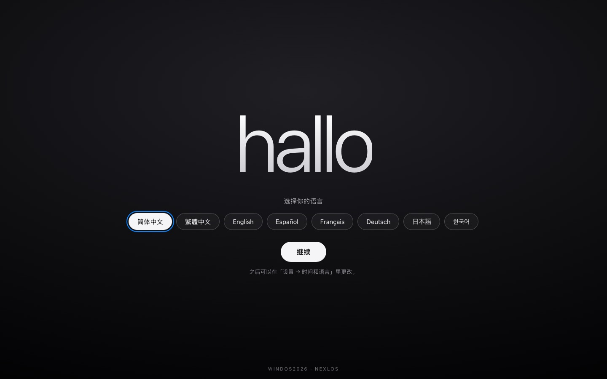

0. 先分清五个概念
| 名称 | 是什么 | 你要管的事 |
|---|---|---|
| DSH | DeepSeek Harness，宿主。会话、模型连接、凭据、文件与命令权限都由它负责 | 装好并保持版本可用 |
| windos2026 | NexlOS 的 DSH 插件版；也可以作为 Octop 的桌面服务运行 | 安装、升级、卸载 |
| profile / 档案 | 一份插件组装。不同档案的插件与设置互不影响 | 起名字，别和别的用途重名 |
| home / 工作区 | NexlOS 读写应用与设置的数据目录 | 知道它在哪，定期备份 |
| 应用 | 一个目录：index.html 加 app.json | 复制、备份、删除 |
模型由宿主提供。插件不带你自己的 key，也没有默认 provider；它读你当前档案里已经配置的模型。看不到模型时，它会直说 unavailable 或返回 501，不假装就绪。
1. 先安装
最短路径：把仓库地址发给 DSH，再说一句「安装 windos2026」。
安装 bundle 会加载插件代码，需要 Full access 或当次批准。装好后重新进入 Web 桌面。
Octop 的装法不同：克隆仓库后运行 ./bin/octop-install install。要求 Node.js 22+ 和 ~/.octop 下的现有安装。完整步骤、参数与卸载见 安装指南。
2. 第一次开机
首次进入会先显示 hello 引导：黑底大字招呼语、语言选择，然后进系统。默认预选 English；可选简体中文、繁體中文、日文、韩文、Español、Français、Deutsch。选择结果写入 settings.json → language。

?hello=1。进系统后先认识三样东西：
- 开始菜单：左下角。应用、设置与关机都在这里。
- 任务栏：窗口按钮、托盘、时钟。Win98 主题固定 44 px，不继承现代主题的 78 px 高度。
- 子午流注钟：右上角的桌面组件。它是中医文化件，始终中文，不随界面语言翻译。
3. 认识桌面
17 个内置应用按用途分成四组。桌面图标、开始菜单、搜索与应用清单指向同一批入口；「系统」不出现在桌面与 Dock。
| 类别 | 应用 | 做什么 |
|---|---|---|
| 系统 | 此电脑 | 浏览 NexlOS 目录：空间、应用、库与日志 |
| 终端 | 在宿主电脑上跑 shell：git、npm、构建脚本（Octop 无 PTY，不可用） | |
| 设置 | 主题、壁纸、颜色、应用与更新 | |
| 应用生成 | 用一句话生成应用，或从 GitHub 导入 | |
| 系统 | 内核版本、命令目录与运行状态 | |
| 创作 | 记忆 | 宿主工作区的记忆树：主题、观察与项目 |
| 书房 | 书目、正文、总纲、人物、任务与导出 | |
| 画板 | 毛笔、水彩、蜡笔、画框、套索与拍立得；导出 PNG（可选包） | |
| ArtCraft 移植版 | 图像、矢量、时间线、文档与净室工作台（非官方移植） | |
| 关系图谱 | 把 Markdown 连成关系网：双链、标签与反向链接 | |
| 办公与工具 | 便捷办公 | Word、Excel、PPT、Markdown、HTML 与 PDF；文件统一存进「文稿」 |
| 便利贴 | Markdown / HTML 直接贴在桌面上，双击折叠 | |
| Agent 浏览器 | 结构优先读取网页语义、正文、链接、表格与代码；人类视图在独立 Chrome | |
| 扫一扫 | 摄像头扫码：二维码、网址与应用链接 | |
| 媒体与游戏 | 视频 | 本地或网络视频：拖入即播，画中画与全屏 |
| 音乐 | 曲库、环境音与后台播放 | |
| 扫雷 | 首步安全、标旗、和弦与三档难度 |
4. 第一句话造应用
打开「应用生成」，写一句你真正想要的东西。下面三句都能用：
- 做一个 25 分钟的番茄钟，深色，结束时响一声。
- 做一个扫雷，首步安全，三档难度。
- 做一个记账应用，数据存在本地，月底给我一个总数。
点下生成之后
- 命中已知模板时，直接渲染模板 HTML；否则交给宿主模型生成单文件 HTML。
- 生成结果必须在浏览器里通过验收：完整 HTML、有
<title>、不能访问父窗口、不能引用外部http(s)资源。 - 验收失败会自动让模型修一次；仍然失败就报错，不会把坏文件放上桌面。
- 通过后写入
apps/gen-<date>-<random>/index.html与app.json，图标出现在桌面。
生成的应用跑在独立 origin，可以用 localStorage 与 Worker。需要和宿主数据打交道时，用 window.nexlOS.storage；离开宿主后这段能力不存在，代码里要留回退。
如果生成器说模型不可用：回到 DSH 配置模型与凭据。插件不带 key，也不会替你选 provider。
5. 导入一个 GitHub 仓库
同一个「应用生成」面板里，粘贴一个 GitHub 地址。插件只接受 github.com/owner/repo。
| 步骤 | 行为 | 限制 |
|---|---|---|
| 校验 | 只接受 github.com/owner/repo | 其他域名直接拒绝 |
| 克隆 | git clone --depth 1 | 180 秒超时 |
| 入口 | 根 index.html 直接使用 | 没有入口时看下一步 |
| 构建 | 有 package.json 且声明 build 时，npm install + npm run build | 各 300 秒；执行前必须显式同意 |
| 产物 | 依次找 dist/index.html、build/index.html、out/index.html | 找不到就报错 |
| 落地 | apps/gh-<date>-<random>/，写 app.json | 应用是普通目录 |
build 脚本的仓库会在你的机器上跑 npm install 与 npm run build。只导入你信任的仓库；失败时插件会清掉这次克隆的目录。
适合导入的：有根 index.html 的静态站点、十年没更新但还能打开的小工具、带 build 脚本的标准前端项目。不适合的：需要后端、数据库或私有凭据的项目。
6. 带走一个应用
应用就是目录。把它复制出来，用任何静态服务器打开：
单文件应用不依赖构建工具，换一台机器照样跑。用到 window.nexlOS.storage 的部分需要回退到 localStorage；用外部 CDN 的应用不符合生成器的验收规则，也不会被自动生成。
带走的是文件，不是签名。没有 .nexlosapp 签名包，也没有跨机器出处校验；这正是它可迁移的原因。
7. 最小应用结构
一个最小应用只有两个文件：
id只用小写字母、数字与连字符；它也是目录名。entry指向入口 HTML；生成器写的是index.html。capabilities至少包含storage才能读写自己的数据；不声明时宿主数据接口返回 403。- 页面必须有
<title>，不能访问window.parent，不能依赖外部http(s)资源。
内置应用以代码形式放在 webos/；生成的应用放在 NexlOS home 的 apps/。两者在桌面上看起来一样，维护方式不同。
8. 25 条命令
这些是宿主 HTTP 接口暴露的命令，桌面与 agent 共用。它们不是 shell 命令；终端应用里跑的是宿主的 shell。
| 分组 | 命令 | 作用 |
|---|---|---|
| 设置 | settings.get | 读取桌面设置 |
settings.set | 写入桌面设置 | |
| 应用 | app.list | 本机应用清单 |
app.open | 打开生成应用 | |
| 文件 | fs.list | 列目录 |
fs.read | 读文本文件 | |
fs.write | 保存文本文件 | |
fs.mkdir | 新建文件夹 | |
fs.rename | 移动 / 重命名 | |
fs.delete | 删除 | |
fs.usage | 工作区占用 | |
| 小说 | novel.list | 列出全部书目 |
novel.create | 新建一本书 | |
novel.open | 打开一本书 | |
| 章节 | chapter.list | 章节目录 |
chapter.create | 新建一章 | |
chapter.read | 读取正文 | |
chapter.save | 保存正文 | |
| 大纲 | outline.read | 读取总纲 |
outline.save | 保存总纲 | |
| 人物 | cast.list | 人物表 |
cast.save | 保存人物表 | |
| 导出 | export.markdown | 合并导出 Markdown |
| 系统 | system.status | 内核状态与命令目录 |
workspace.info | 工作区状态 |
9. 终端多开
终端应用支持标签与分栏。每一格是一条独立 PTY，可以同时跑不同的 CLI；切到别的应用再回来，会话还在。
- 打开「终端」，用 + 新建标签。
- 用分栏按钮把当前标签拆成两格或三格；拖动分隔条改比例。
- 在每一格运行一个 CLI：
grok、claude、codex。三路输出各自滚动，互不覆盖。
标签与分栏结构存在 sessionStorage，刷新或切走再回来会接回同一条 PTY。三路改的是同一个工作区，文件落盘后桌面立即可见。
10. 子代理与蜂群
蜂群或子代理运行时，过程出现在三处，数据来自同一条目录：
- 右栏「状态空间」：集群条给出人数、步数、在跑数；成员区一行一个子代理，显示当前工具与参数，↗ 打开只读对话。成员区独立滚动，不随日志滚走。
- 对话窗口的状态弹窗：标题右侧的「N 子代理」展开后逐行列出成员；运行中显示已用时，结束后显示步数与结果摘要。点行进入该子代理会话，标题栏 ← 回到队长。
- Agent 集群浮窗：蜂群指令的成员与状态；成员行点开同一只读对话。
一轮的运行轨迹只收本轮派的子代理：Host 用子会话的 createdAt 对照本轮起点，仍在后台跑的旧成员例外保留。相关接口：GET /agent/agents?sessionId=<captain>、GET /agent/agents?swarmId=<id>、GET /agent/agents?scope=all。
11. Agent 浏览器
在桌面命令栏或 DSH 里说清目标，Agent 会先读页面结构，再决定动作。它走的是结构优先的语义视图：正文、链接、表格、表单和可操作元素，不是靠截图猜坐标。
- 读页面：
snapshot返回语义树与动作空间，先看再点。 - 做动作：
navigate、click、type、scroll都落在独立的 Agent 浏览器里。 - 人工接管：遇到登录或验证码，
handoff打开独立 Chrome；你处理完，resume回到同一个任务。 - 默认隔离：侧车 Chromium，不操作用户日常标签页；需要附带现有登录态时才切到 attach 模式。
浏览器任务和桌面命令共用同一个会话。让它先读页面、再执行写操作；提交前确认目标页面和字段，避免在错误页面上重复提交。